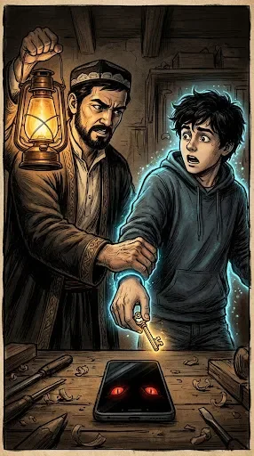
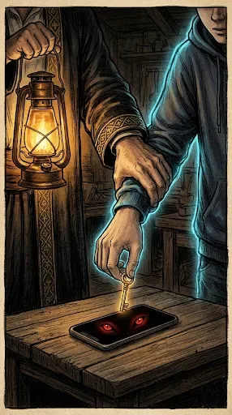
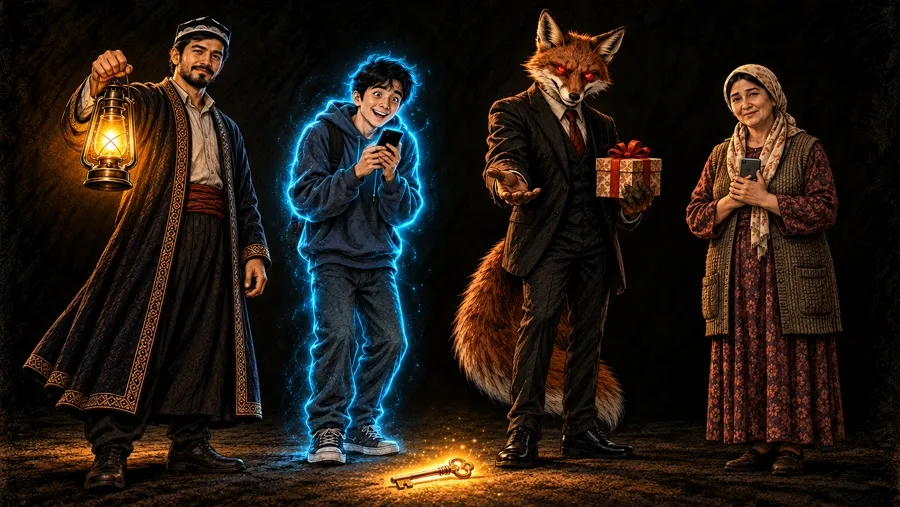

1-sahna — 9:16 (tik)
0–5 s

Ikkalasi ham ishlatiladi: avval A (To'xta!), keyin B yaqin plan. Xato: Ustaning qo'llari qari (ajin, bo'rtgan tomirlar), u esa ~30 yosh — tahrir prompti chatda. Ikkalasi 286×512, juda kichik: asl o'lchamini yuklab oling.

Ovoz
Usta: To'xta! «Siz yutdingiz» degan notanishga SMS kodni hech qachon o'qib berma.
Rasm prompti (ChatGPT)Attach the character sheet image. Keep every character who appears exactly as in the character sheet: the same face, age, hair, clothes, colours and props. Scene 1, vertical 9:16. Close-up of hands in a dark old workshop room lit only by Usta's lantern and the phone screen. The strong hand of USTA (the calm craftsman about 30 years old with a short jet-black beard, black-and-white Uzbek doppi, dark embroidered chapan robe with a red sash, holding his warm amber oil lantern; his hands are the young strong hands of a 30-year-old man, smooth skin, no wrinkles, no swollen veins, not old hands) firmly grabs the thin wrist of DIYOR (the naive guy about 20 years old with messy black hair, big innocent eyes, dark blue hoodie, jeans and sneakers, outlined with a soft cyan-blue glow). Diyor's fingers hold a small glowing golden key, about to drop it onto a smartphone lying on the wooden table; from the dark phone screen two glowing red fox eyes stare up, waiting. Amber lantern light from the side, cyan glow on Diyor's sleeve. Style: dark hand-drawn illustration exactly like the character sheet, rough ink and charcoal lines, aged paper texture, deep black-brown shadows, almost no colour; the only bright colours are the cyan-blue glow around Diyor, the warm amber lantern light of Usta, the red eyes of the fox and the gold of the key. Moody fable atmosphere, like an old illustrated parable. Vertical 9:16. No text, no letters, no numbers, no logos, no watermark, no subtitles.